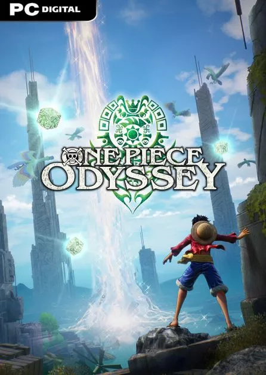
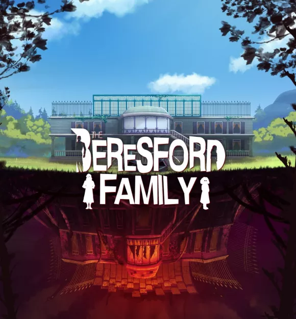
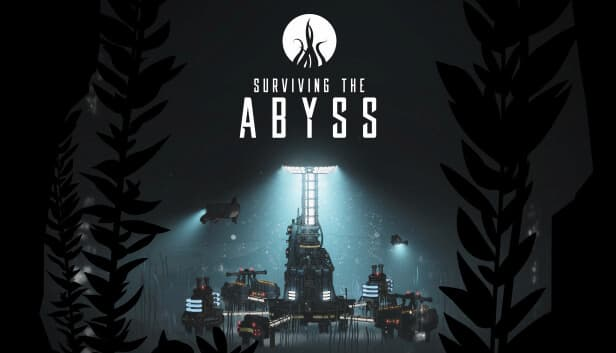
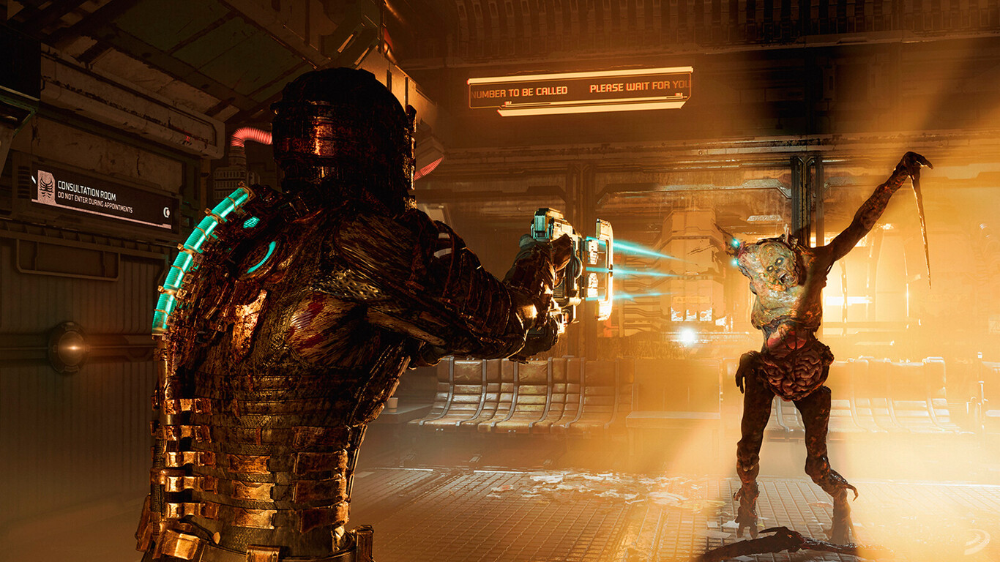

Juegos
Lanzamientos
Viernes 13 de Enero
One Piece Odyssey
La exitosa y veterana saga One Piece se embarca en un nuevo juego de rol de corte japonés que se convierte en la producción más ambiciosa jamás realizada por Bandai Namco dentro de esta serie manganime.
Lunes 16 de Enero
The Beresford Family
The Beresford Family es una aventura de terror donde Robert Beresford y el detective local Cooper investigan la muerte de la pequeña Matilda Beresford.
Martes 17 de Enero
Surviving The Abyss
Surviving the Abyss es un videojuego de estrategia y gestión donde asumes el papel de supervisor de una instalación de investigación en aguas profundas durante el apogeo de una historia alternativa de la era de la Guerra Fría.
Jueves 19 de Enero
Dead Space
Dead Space de EA Motive es un remake sobre el clásico videojuego de terror espacial y ciencia ficción de Visceral Games reconstruido desde cero para aprovechar las bondades de las consolas de nueva generación y PC.